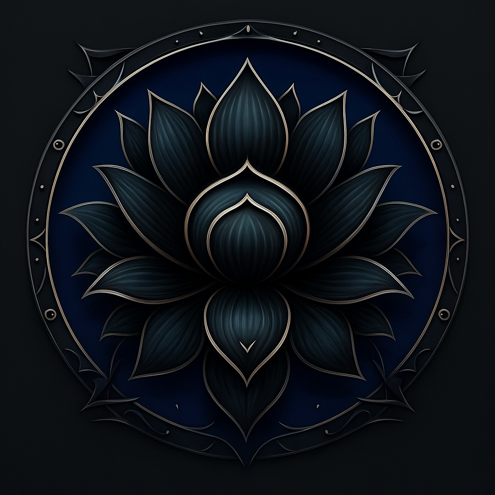

Introduction 2026
Depuis les confins brumeux de votre mémoire, un mot murmuré dans les tavernes comme dans les cryptes vous glace encore le sang : les Génocides. Telle une peste sans visage, ils ont fauché royaumes et lignées, étouffant les rêves d’enfance et brisant l’ordre ancien. Seuls les peuples à la longue espérance de vie murmurent encore qu’il fut un âge de paix, où les guerres n’étaient que querelles de frontières et non les ombres d’une extinction.
Puis, sans présage, sans prophétie, les Génocides cessèrent, net, il y a deux ans. Depuis, les nations pansent leurs plaies, relèvent leurs remparts… et cherchent celui qui a commis l’hécatombe.
C’est alors que vous, héros… ou malfrat, recevez une lettre scellée d’un symbole inconnu. Un certain Avarus, jeune aventurier aux ambitions inquiétantes, y affirme vouloir fonder une guilde. Son but : percer le mystère des Génocides… et empêcher le prochain, si d’aventure l’ombre devait revenir.
Le destin t’appelle… Vas-tu répondre ?
